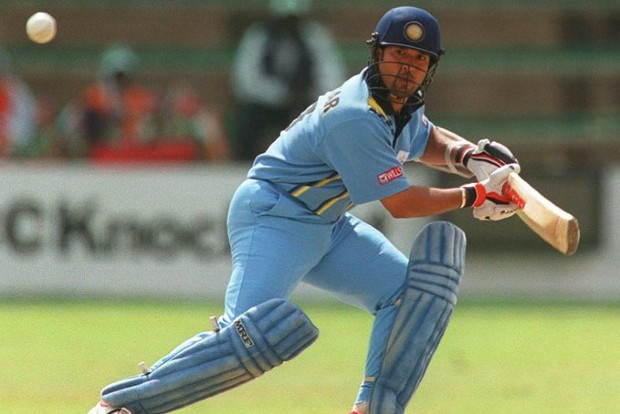
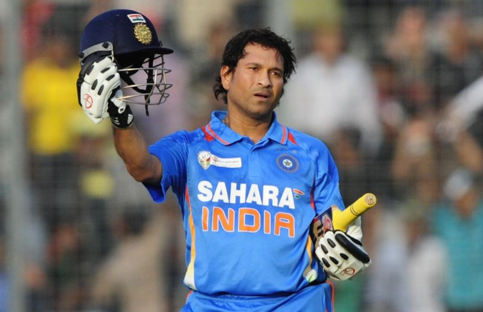
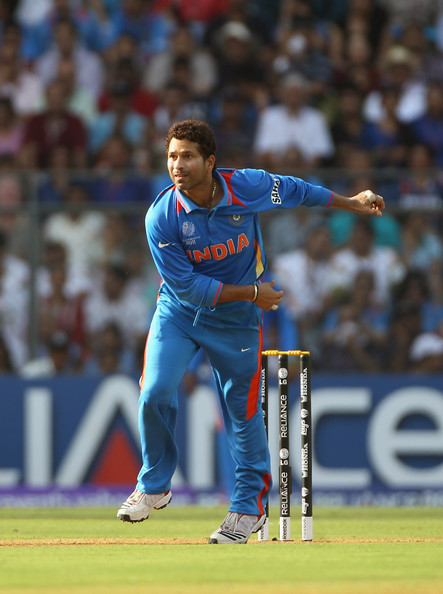
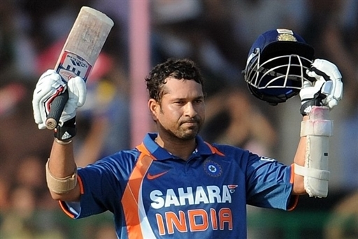
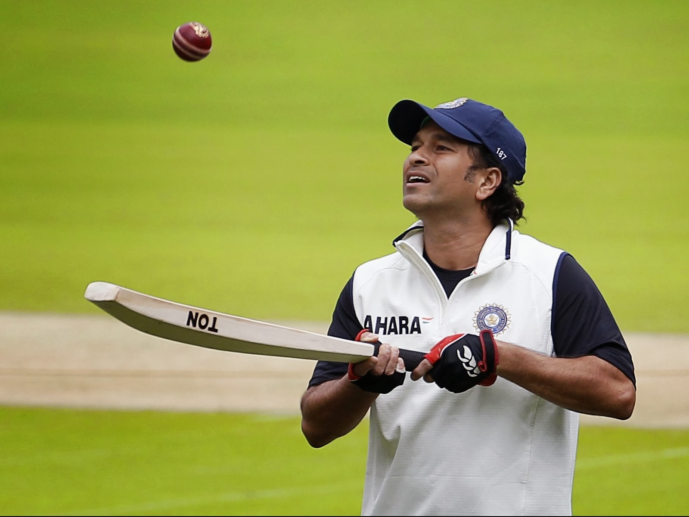
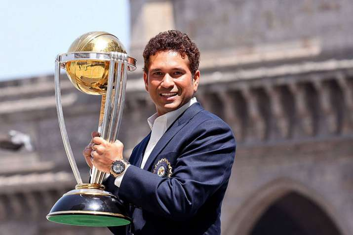
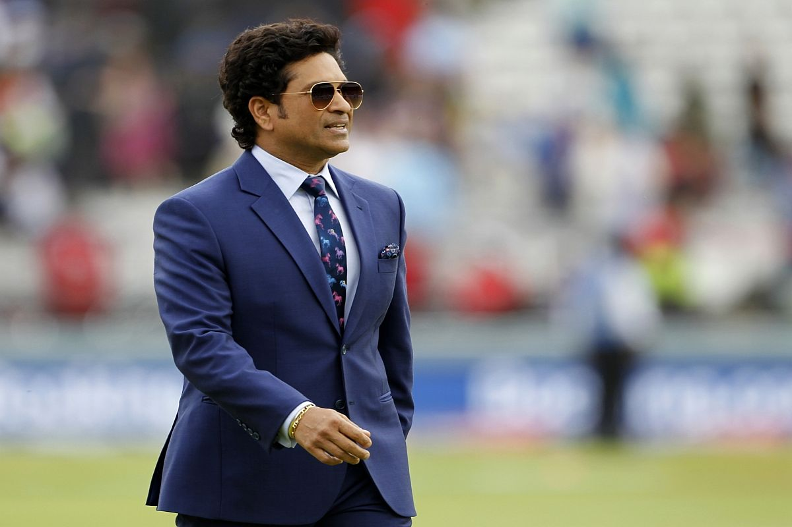

Sachin Tendulkar is the most distinguished icon in the cricketing world. It’s hard to find any flaws in his game which has earned him the reputation of being a complete batsman from fans and colleagues alike. Think of any imaginable record in the game and you can be sure Tendulkar holds it or has held it at some point in his career. He made his debut when he was just 16-years-old and throughout his career has shouldered the dreams of the entire nation, match after match. To fans of the game around the world, he is known as the God of Cricket.
|  | |
 |  |
|  |  |  |  |
Tendulkar is the first player to score fifty Test centuries, and the first to score fifty centuries in all international cricket combined he now has 99 centuries in international cricket. He was also the first player to score 10,000 runs in one-day internationals and is the leading run getter in Tests. Tendulkar passed 30,000 runs in international cricket on 20 November 2009, and has been honoured with the Padma Vibhushan award, India’s second highest civilian award, and the Rajiv Gandhi Khel Ratna award, India’s highest sporting honour. Tendulkar became the first sportsperson and the first personality without an aviation background to be awarded the honorary rank of Group Captain by the Indian Air Force. He won the 2010 Sir Garfield Sobers Trophy for cricketer of the year at the ICC awards.